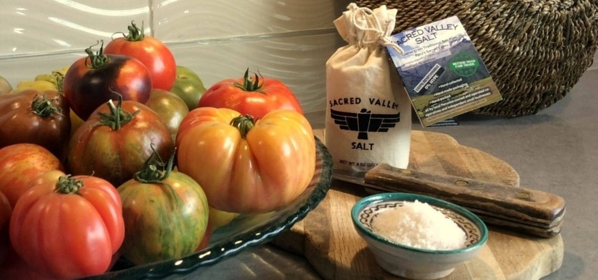
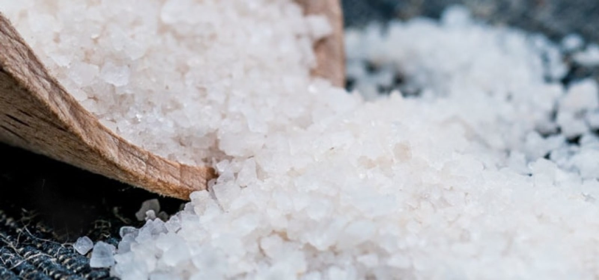
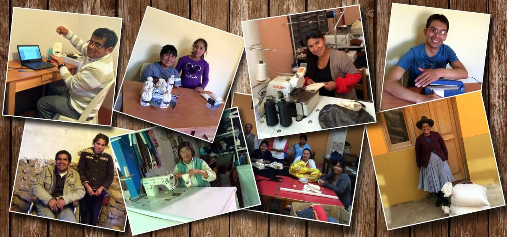
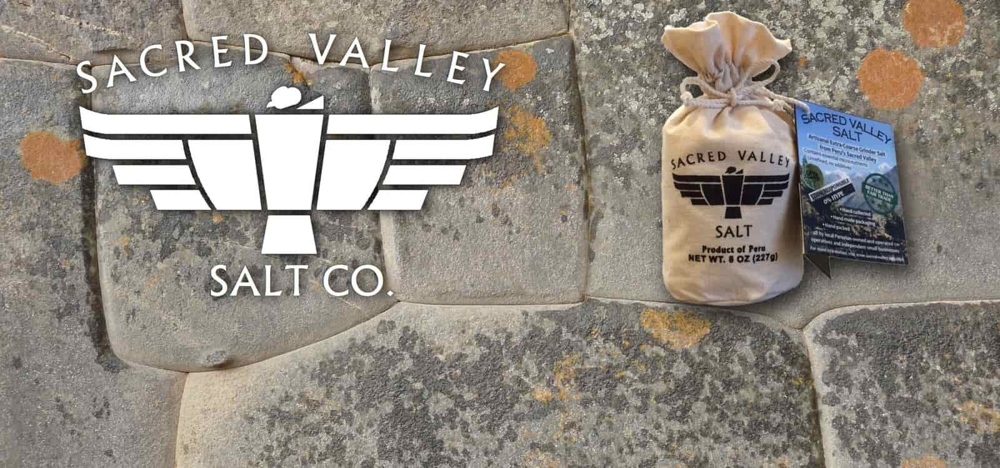

Good food deserves good salt.

Sacred Valley Salt is premium, all-natural finishing salt...
responsibly produced in Peru's Sacred Valley...
with minimal environmental impact for the past 800+ years.

Salt that makes a big difference for Sacred Valley inhabitants. Really.

Good Salt. 100% Responsible. 0% Hype.